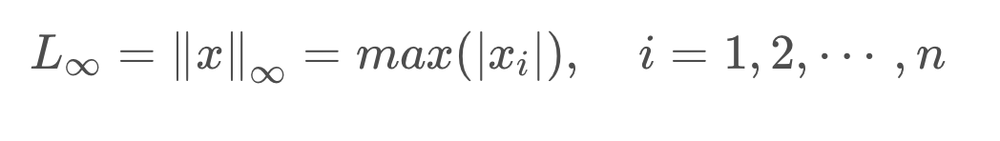
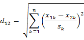

This document isn’t finished and will be updated anytime.
在做分类时常常需要估算不同样本之间的相似性度量（Similarity Measurement），这时通常采用的方法就是计算样本间的”距离“（Distance）。采用什么样的方法计算距离是很讲究，甚至关系到分类的正确与否。
本文的目的就是对常用的相似性度量作一个总结。
一、距离度量的基本性质：
非负性：dist(x,y) >= 0
同一性：dist(x,x) = 0
对称性：dist(x,y) = dist(y,x)
三角不等式：dist(x,z)+dist(y,z) >= dist(x,y)
二、常用相似性度量
1、范数与距离量度
范数(norm)是线性代数中的一个基本概念。在泛函分析中，它定义在赋范线性空间中，并满足一定的条件，即①非负性；②齐次性；③三角不等式，它常常被用来度量某个向量空间（或矩阵）中的每个向量的长度或大小。划重点：范数的三个特性（满足条件）：非负性、齐次性、三角不等式。
外文名：norm
作用：常常被用来度量某个向量空间（或矩阵）中的每个向量的长度或大小。
记号：$f ( x ) = ∥ x ∥$ ，我们常用$∥ x ∥_{symb}$表示具体范数，其中下标symb 是区分范数的助记符号，
如$∥ x ∥_1$，$∥ x ∥_2$
（1）L-p范数（L-p norm）
L-P范数不是一个范数，而是一组范数的定义，其定义如下：

ℓ - p范数只是一个概念上宽泛的说法**。取p = 1 ，就得到了$ℓ_1$范数；取p = 2，就得到了$ℓ_2$范数（又称为Euclid范数**，即欧几里得范数，欧几里得距离，欧式距离)
下图表示了p从无穷到0变化时，三维空间中到原点的距离（范数）为1的点构成的图形的变化情况。以常见的L-2范数（p=2）为例，此时的范数也即欧氏距离，空间中到原点的欧氏距离为1的点构成了一个球面。
（2）范数和距离（或长度）的关系
在数学上，范数包括向量范数和矩阵范数，向量范数表征向量空间中向量的大小，矩阵范数表征矩阵引起变化的大小。一种非严密的解释就是，对应向量范数，向量空间中的向量都是有大小的，这个大小如何度量，就是用范数来度量的，不同的范数都可以来度量这个大小，就好比米和尺都可以来度量远近一样；
而我们知道距离的定义是一个宽泛的概念，只要满足非负、自反、三角不等式就可以称之为距离。范数是一种强化了的距离概念，它在定义上比距离多了一条数乘的运算法则。有时候为了便于理解，我们可以把范数当作距离来理解。
对于两个变量，L- p范数也能定义为距离：
（3）L0范数
当p = 0 时，就是L0范数。L0范数并不是一个真正的、有意义的范数。用上面范数的定义可以得到L0范数的定义：

这里就有点问题了，开0次方是什么鬼？所以不好说明$ℓ_0$范数的意义。在通常情况下，$ℓ_0$范数主要被用来度量向量中非零元素的个数。
L0范数定义为：

即：范数$∥ x ∥_0$表示向量 x 中非零元素的个数。
（4）L1范数，p=1，就是曼哈顿距离
L1范数：
L1 范数对应曼哈顿距离，也就是在欧几里得空间的固定直角坐标系上两点所形成的线段对轴产生的投影的距离总和。例如在平面上，坐标（x1, y1）的点P1与坐标（x2, y2）的点P2的曼哈顿距离为：| x1 - x2 | + | y1 - y2 |；要注意的是，曼哈顿距离依赖座标系统的转度，而非系统在座标轴上的平移或映射。
曼哈顿距离：

（5）L2范数，p=2，就是欧氏距离
L2范数：
最常见的两点之间或多点之间的距离表示法，又称之为欧几里得度量，它定义于欧几里得空间中。n维空间中两个点x1(x11,x12,…,x1n)与 x2(x21,x22,…,x2n)间的欧氏距离

图中红线代表曼哈顿距离，绿色代表欧氏距离，也就是直线距离，而蓝色和黄色代表等价的曼哈顿距离。
（6）L∞范数，p→∞，就是切比雪夫距离
L∞范数定义：

二维平面两点a(x1,y1)与b(x2,y2)间的切比雪夫距离：
n维空间点a(x11,x12,…,x1i)与b(x21,x22,…,x2i)的切比雪夫距离：

它主要被用来度量向量（特征值的差）中绝对值的最大值
（7）闵可夫斯基距离
两变量之间的L-p范数就是闵可夫斯基距离，所以闵氏距离不是一种距离，而是一组距离的定义。
两个n维变量a(x11,x12,…,x1n)与 b(x21,x22,…,x2n)间的闵可夫斯基距离定义为：
其中p是一个变参数。当p=1时，就是曼哈顿距离，当p=2时，就是欧氏距离，当p→∞时，就是切比雪夫距离
闵氏距离的缺点：
举个例子：二维样本(身高,体重)，其中身高范围是150190，体重范围是5060，有三个样本：a(180,50)，b(190,50)，c(180,60)。那么a与b之间的闵氏距离（无论是曼哈顿距离、欧氏距离或切比雪夫距离）等于a与c之间的闵氏距离，但是身高的10cm真的等价于体重的10kg么？因此用闵氏距离来衡量这些样本间的相似度很有问题。
简单说来，闵氏距离的缺点主要有两个：(1)将各个分量的量纲(scale)，也就是“单位”当作相同的看待了。(2)没有考虑各个分量的分布（期望，方差等)可能是不同的。
2、标准化欧氏距离 (Standardized Euclidean distance )
标准欧氏距离的定义：
标准化欧氏距离是针对简单欧氏距离的缺点而作的一种改进方案。标准欧氏距离的思路：既然数据各维分量的分布不一样，好吧！那我先将各个分量都“标准化”到均值、方差相等吧。均值和方差标准化到多少呢？这里先复习点统计学知识吧，假设样本集X的均值(mean)为m，标准差(standard deviation)为s，那么X的“标准化变量”表示为：
而且标准化变量的数学期望为0，方差为1。因此样本集的标准化过程(standardization)用公式描述就是：
标准化后的值 = ( 标准化前的值 － 分量的均值 ) /分量的标准差
经过简单的推导就可以得到两个n维向量a(x11,x12,…,x1n)与 b(x21,x22,…,x2n)间的标准化欧氏距离的公式：

如果将方差的倒数看成是一个权重，这个公式可以看成是一种**加权欧氏距离(Weighted Euclidean distance)**。
3、“加权(weighted)”闵可夫斯基距离
当样本中不同属性的重要性不同时，可使用”加权距离”(weighted distance)。

4、马氏距离(Mahalanobis Distance)
（1）马氏距离定义：
一个向量的不同维度如果是不同的量纲，更有甚者，维度之间是相关的，比如身高和体重组成的向量，在闵可夫斯基距离中等同对待，有时，这样是不恰当的。马氏距离利用 Cholesky transformation 消除了不同维度之间的相关性和尺度不同。
其中，S为样本的协方差矩阵。当S是单位阵的时候，马氏距离就是欧式距离；当S是对角阵的时候，马氏距离是加权欧式距离。
我们可以按照连续性将属性分为“连续属性”和“离散属性”；也可以按照有序性将属性分为“有序属性”和“无序属性”。上面的相似性度量都是关于“连续”并“有序”属性的，下面给出几个关于“离散属性”和“无序属性”的相似性度量。
(2)马氏距离的优缺点：量纲无关，排除变量之间的相关性的干扰；但是有可能放大变化细微维度的作用；
5、夹角余弦相似性(Cosine Similarity)
几何中夹角余弦可用来衡量两个向量方向的差异，机器学习中借用这一概念来衡量样本向量之间的差异。
（1）在二维空间中向量A(x1,y1)与向量B(x2,y2)的夹角余弦公式：

（2）对于两个n维样本点a(x1,x2,…,xn)和b(y1,y2,…,yn)，可以使用类似于夹角余弦的概念来衡量它们间的相似程度：

夹角余弦取值范围为[-1,1]。夹角余弦越大表示两个向量的夹角越小，夹角余弦越小表示两向量的夹角越大。当两个向量的方向重合时夹角余弦取最大值1，当两个向量的方向完全相反夹角余弦取最小值-1。
应用实例可以参考：文本相似度 之余弦夹角 度量算法
6、汉明距离(Hamming distance)
（1）汉明距离的定义
两个等长字符串s1与s2之间的汉明距离定义为将其中一个变为另外一个所需要作的最小替换次数。
例如:字符串“11110011”与“10010010”之间的汉明距离为3。
汉明距离可以在通信中累计定长二进制字中发生翻转的错误数据位，所以它也被称为信号距离。
如果要比较两个不同长度的字符串，不仅要进行替换，而且要进行插入与删除的运算，在这种场合下，通常使用更加复杂的编辑距离等算法。
（2）应用：信息编码（为了增强容错性，应使得编码间的最小汉明距离尽可能大）。
7、杰卡德相似系数(Jaccard similarity coefficient)
(1) 杰卡德相似系数
两个集合A和B的交集元素在A，B的并集中所占的比例，称为两个集合的杰卡德相似系数，用符号J(A,B)表示。

杰卡德相似系数是衡量两个集合的相似度一种指标。
(2) 杰卡德距离
与杰卡德相似系数相反的概念是**杰卡德距离(**Jaccard distance)，是杰卡德系数的补集，用来描述两个集合的不相似度。杰卡德距离越大，两个样本相似度越低，可用如下公式表示：

杰卡德距离用两个集合中不同元素占所有元素的比例来衡量两个集合的区分度。
(3) 杰卡德相似系数与杰卡德距离的应用
可将杰卡德相似系数用在衡量样本的相似度上。
样本A与样本B是两个n维向量，而且所有维度的取值都是0或1。例如：A(0111)和B(1011)。我们将样本看成是一个集合，1表示集合包含该元素，0表示集合不包含该元素。
p ：样本A与B都是1的维度的个数
q ：样本A是1，样本B是0的维度的个数
r ：样本A是0，样本B是1的维度的个数
s ：样本A与B都是0的维度的个数
那么样本A与B的杰卡德相似系数可以表示为：
这里p+q+r可理解为A与B的并集的元素个数，而p是A与B的交集的元素个数；杰卡德距离取反。
8、皮尔森相关系数 ( Pearson Correlation coefficient )与相关距离(Correlation distance)
（1）相关系数的定义：

相关系数是衡量随机变量X与Y相关程度的一种方法，相关系数的取值范围是[-1,1]。相关系数的绝对值越大，则表明X与Y相关度越高。当X与Y线性相关时，相关系数取值为1（正线性相关）或-1（负线性相关）。
（2）相关距离的定义：

（3）其他相关性系数：三个相关性系数（pearson, spearman, kendall），详细解释见前博客文章《三种相关性检验与比较（两个变量之间）》
9、信息熵(Information Entropy)
信息熵并不属于一种相似性度量，但之后有基于信息熵的其他相似性量度，所以先介绍一下。信息熵是衡量分布的混乱程度或分散程度的一种度量。分布越分散(或者说分布越平均)，信息熵就越大。分布越有序（或者说分布越集中），信息熵就越小。
计算给定的样本集X的信息熵的公式：
参数的含义：
N：样本集X的分类数
p(xi)：X中第i类元素出现的概率
信息熵越大表明样本集S分类越分散，信息熵越小则表明样本集X分类越集中。当S中n个分类出现的概率一样大时（都是1/n），信息熵取最大值log2(n)。当X只有一个分类时，信息熵取最小值0；H (p)随概率 p 变化的曲线如图所示（单位为比特）。
10、KL散度(Kullback-Leibler Divergence)
KL 散度，又叫相对熵，这是一个用来衡量两个概率分布的相似性的一个度量指标。我们知道，现实世界里的任何观察都可以看成表示成信息和数据，一般来说，我们无法获取数据的总体，我们只能拿到数据的部分样本，根据数据的部分样本，我们会对数据的整体做一个近似的估计，而数据整体本身有一个真实的分布（我们可能永远无法知道），那么近似估计的概率分布和数据整体真实的概率分布的相似度，或者说差异程度，可以用 KL 散度来表示。
KL 散度，最早是从信息论里演化而来的，所以我们要先知道信息熵（前文提到了），在信息熵的基础上，我们定义 KL 散度为：
又可以写为：
可以证明，KL散度大于等于0，当p=q时等于0；KL散度不满足对称性。
$$ D_KL( p || q ) $$表示的就是概率 q 与概率 p 之间的差异，很显然，散度越小，说明 概率 q 与概率 p 之间越接近，那么估计的概率分布于真实的概率分布也就越接近。
KL 散度可以帮助我们选择最优的参数，比如 p(x) 是我们需要估计的一个未知的分布，我们无法直接得知 p(x) 的分布，不过我们可以建立一个分布 q( x | θ ) 去估计 p(x)，为了确定参数 θ，虽然我们无法得知 p(x) 的真实分布，但可以利用采样的方法，p(x) 中采样 N 个样本，构建如下的目标函数：
因为我们要预估的是参数 θ，上面的第一项 logp(xi) 与参数 θ 无关，所以我们要优化的其实是 −logq(xi | θ)，而这个就是我们熟悉的最大似然估计;
11、Hellinger距离(Hellinger Distance)
一个与KL散度类似的距离，表示随机分布之间的相似性的Hellinger距离
当α=0时
这时，Hellinger距离就是两个随机分布取平方根之后的欧式距离，符合距离度量的四个性质，是严格的距离度量。
参考资料：
求马氏距离（Mahalanobis distance ）matlab版
Pearson product-moment correlation coefficient
机器学习：Kullback-Leibler Divergence （KL 散度）